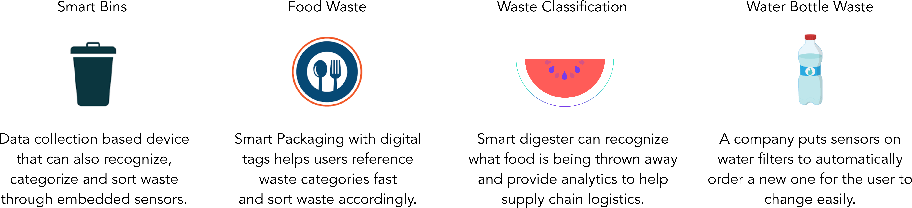
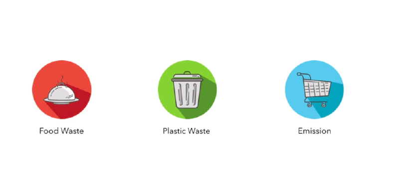
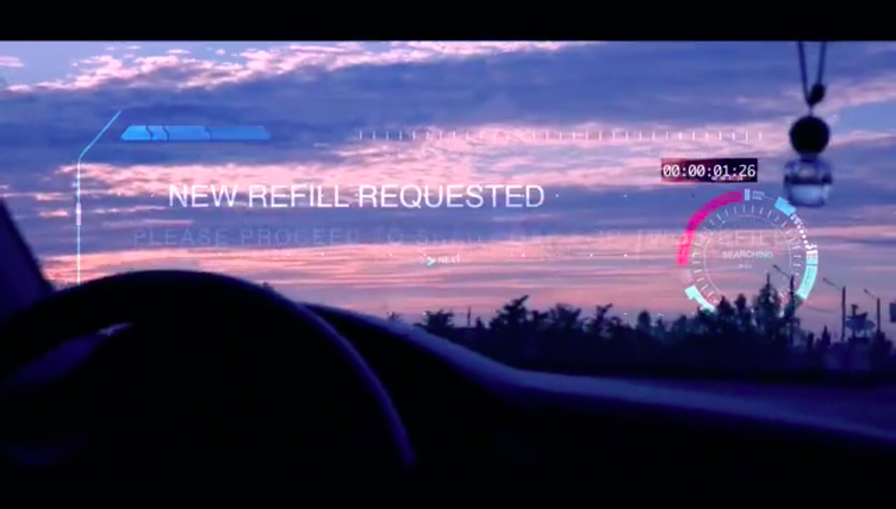

The Final Product
The Process
Domain Selection
Current Trends Analysis
In today's world, what does IoT technology look like when it's used to solve civic engagement issues? What are some current applications? I tackled this question and found the following insights.

Concept Mapping
As a team, we created concept maps to identify pain points in the current life cycles of waste and plastics. After identifying many pain points from excessive power consumption to inefficient waste collection, we targeted those which had a high impact to feasibility ratio.

In doing so we identified the following points of civic engagement our IoT system would tackle.

System Design
Concept Development
The next step was to design an IoT based system that would tackle the waste and consumption issues we had previously identified. Using our earlier concept map, we were able to identify that a common pain point in the consumer process was food and plastic waste that was caused by overbuying of grocery items in in plastic containers . We then mapped out what the consumer journey might look like if instead of buying plastic containers, they could buy a Smart Jar!

Final Design
We then identified the details of how such a system would function in the below video. Smart jars would use RIFD tags and weight sensors, the smart jars would be able to monitor food levels to prevent overbuying, using replaceable jars they would eliminate plastic waste, and a common delivery drop point per community would reduce CO2 emissions from multiple consumers going to the grocery store.
Video Development
Storyboards
Our final deliverable for this project was going to be to sell our idea through a concept video. Rather than sell the audience an idea however, I pushed to tell them a story of two indivuals. To do so, I mapped out how some of the features of Smart Jars might look like in the video if we followed the customer through the product lifecycle instead of simply telling the audience what Smart Jars were capable of.


Filming
Filming took place over ten days. Translating our vivid screenplay from the storyboards to real film proved challenging. We focused on maintaining consistency between shots, adequate lighting, and expressive facials. We wanted the video to focus on the story of two individuals, their excessive production of trash, and their subsequent evolution.


Editing
My team had worked incredibly hard to bring a vivid story to life. In order to push the audience to believe in the power of this concept as much as we did, I learned how to create huds on After Effects to convey a futuristic vision otherwise unimaginable to the viewer.

Final Video
The culmination of our work is below!
The final deliverables for this project were the System Design and Concept Video.
Reflection
My first deep dive into IoT technology, I learned a lot about the different components that comprise an IoT system. The world of IoT is fascinating and working on this project was rather challenging due to the unfamiliar nature of IoT technology to the everyday user. This project was also my first swing at using After Effects huds creation, and the results were more than encouraging.
Next steps for Smart Jars would be to refine our concept further and convey those changes accordingly in the concept video and system design. There are gaps in the process we might not know about until we put our system in front of users to test, and those are the gaps we need to identify before we further proceed.